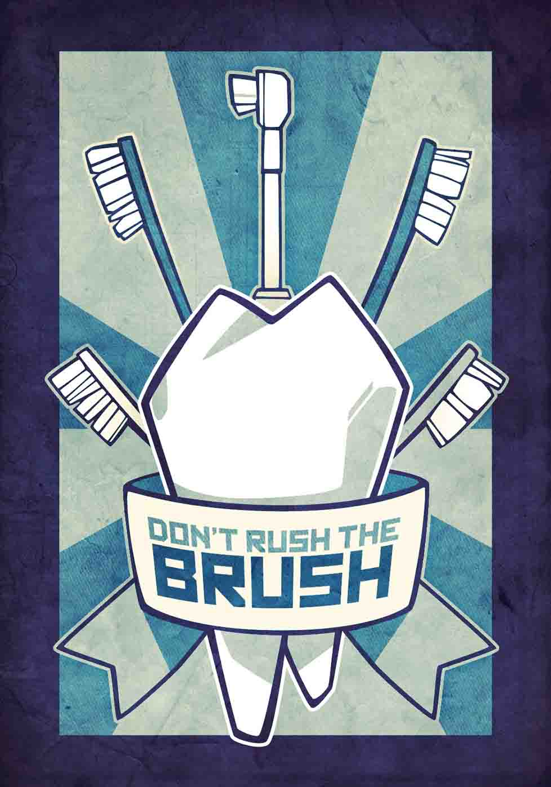

Oral health is the gateway to total health.
The teeth, gums, and mouth allow us to eat good food, speak, and express emotion.
It's elementary: brush twice a day, for two minutes each time, and floss one of those times.
Dentists are doctors too — visit one annually for a checkup. Twice-a-year cleanings by a dental hygienist keep plaque under control.
It's foolish to neglect your pearly whites. Evidence has linked inadequate dental care with poor health and conditions like heart disease and diabetes.
